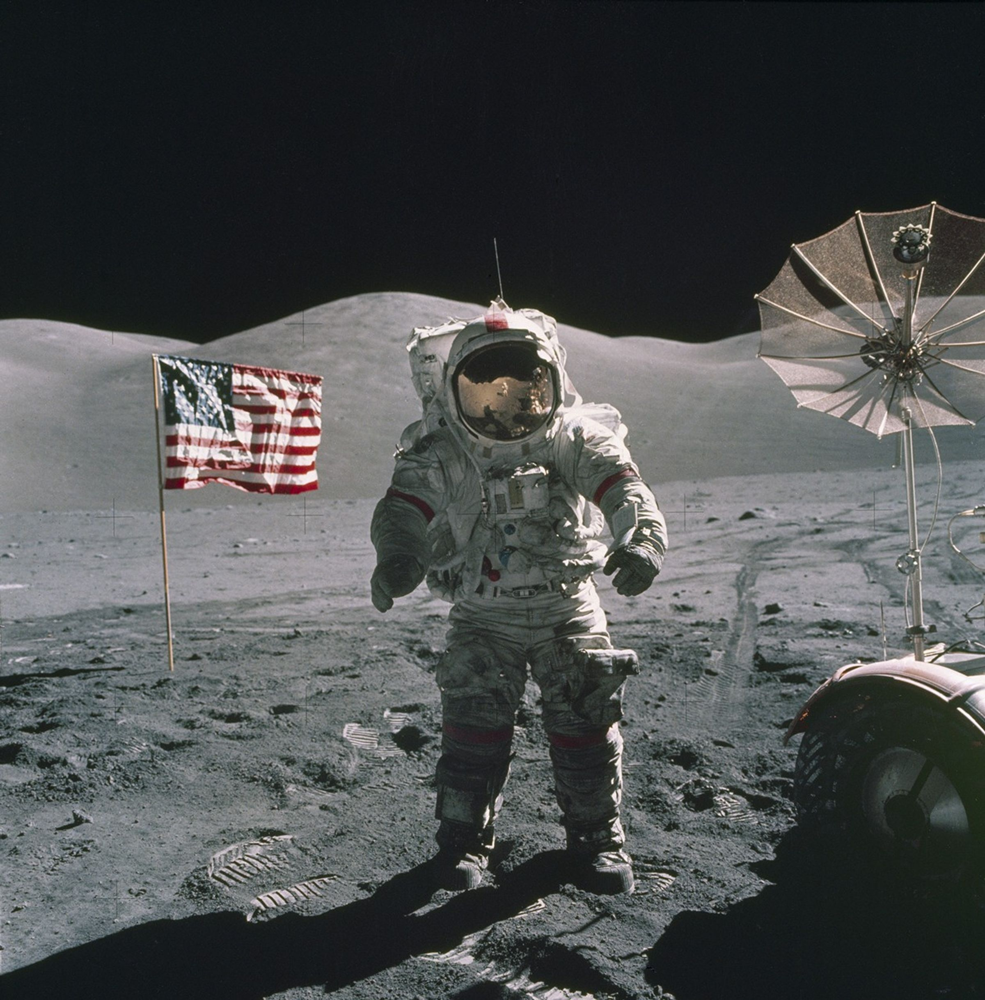

Elevation is how high the Sun appears above a flat local horizon. 0° is level; a larger angle means higher in the sky.

SKYLINE / YOUR GUIDE TO THE LUNAR SOUTH POLE
Where could
we land on
the Moon?
A landing spot is only the beginning.
Discover the landscape, light and connection
that make a place worth exploring.
NASA / APOLLO 17Historical photo at Taurus–Littrow.
Our exploration below focuses on the south pole.
LOOK. ASK. DISCOVER. ↓Our exploration below focuses on the south pole.
A BIG QUESTION. A SIMPLE START.
A landing spot is
only the beginning.
Imagine choosing a campsite. You would look at the ground, check the light, and work out how to stay in touch.
On the Moon, those questions matter too. Skyline connects the landscape with the sky so you can understand what changes from place to place.
Our focus: the lunar south pole. Here, a ridge can catch sunlight while a nearby crater remains in shadow.
Meet the three regions ↗MEET THREE DIFFERENT LANDSCAPES
Pick a place.
Follow your curiosity.
First, get to know the three regions.
Then choose a place to carry into Understand.
 THE LUNAR SOUTH POLE / REAL LROC ORBITAL IMAGERYNASA / GSFC / ARIZONA STATE UNIVERSITY
THE LUNAR SOUTH POLE / REAL LROC ORBITAL IMAGERYNASA / GSFC / ARIZONA STATE UNIVERSITYApproximate study markers, not precise landing coordinates.
EXPLORE / STEP INTO THE LANDSCAPE
From a map.
Into the landscape.
Choose a study region on the map, then enter Surface View. Move across the terrain and look for the outline of a crater or a ridge.
TAKE A CLOSER LOOK
What might hide the sky from here?
Look around and describe what you see. Continue to Understand when you’re ready to experiment.
NASA LROC photography + LOLA elevations · reconstructed 3D view
Seen the landscape? Now discover how light changes the view.
A FAMILIAR MOON. AN UNFAMILIAR PLACE.
Why head
for the south pole?
Because light and darkness can hold very different possibilities.
Near the lunar south pole, the Sun stays low in the sky. Ridges can catch its light while deep crater floors remain in shadow. Those cold shadows can preserve water ice—a scientific clue and a potential resource for future explorers.
The interesting place to visit and the practical place to operate may be different. A mission has to connect the two.
NASA / Moon water & ices ↗≈29.5EARTH DAYS IN ONE
LUNAR DAY–NIGHT CYCLE
LUNAR DAY–NIGHT CYCLE
Low Sun.
Long shadows.A DIFFERENT LIGHTING ENVIRONMENT
FROM THE APOLLO LANDING SITES
Long shadows.A DIFFERENT LIGHTING ENVIRONMENT
FROM THE APOLLO LANDING SITES
A year of changing light, seen from above. A NASA visualization using LRO/LOLA topography—not a live camera.
NASA SVS / Ernie Wright · 2026 visualization ↗WHY CAN’T WE LAND JUST ANYWHERE?
A place to land.
A place to keep going.
Ground, light and a view toward Earth shape the opportunity.
Here’s what to notice when you look at a region.
THE LANDSCAPE HAS A SAYFlat on a map?
Flat on a map?
Look a little closer.
Craters, steep slopes and large rocks can make touchdown and travel difficult. A promising location needs suitable terrain as well as something worth exploring.
A good view of the sky is only one part of choosing a landing site.
NASA / Lunar site selection ↗It’s the outline of the land against the sky.
A ridge can hide the Sun—or Earth—even when the sky above you looks wide open.
SPACE WORDS. PLAIN ENGLISH.
A little context
goes a long way.
Open a question. Follow your curiosity.
Is the “dark side” the same as the far side? +
No. The far side faces away from Earth, but it still receives sunlight. Permanently shadowed areas are specific places—such as some polar crater floors—where surrounding terrain prevents direct sunlight from reaching them.
NASA / Top Moon questions ↗Why can a crater stay dark? +
At the poles, sunlight comes in at a low angle. Deep crater walls can block it from reaching the floor. Some of these permanently shadowed regions stay cold enough to preserve water ice.
NASA / Polar shadows ↗Does more sunlight always mean a better landing site? +
Light is one consideration. A mission also has science goals, terrain constraints, temperature limits, communication needs and vehicle capabilities. The best choice depends on what that particular mission needs.
NASA / Site selection ↗Can’t we always see Earth from the Moon? +
Earth is out of view on the lunar far side. Near the south pole it appears low in the sky; local terrain and changing geometry can block the view. Relay spacecraft can provide another communication path.
NASA / Lunar surface communications ↗What do “rim”, “ridge” and “relay” mean? +
Rim: the raised edge of a crater. Ridge: a long stretch of higher ground. Relay: a spacecraft that passes a signal between places that cannot communicate directly.
What is real NASA data in Skyline? +
The Apollo photograph, LROC mosaic, polar illumination video, Moon model and Earth texture come from NASA sources or the credited reference prototype. The Understand terrain, target paths and results are clearly labeled synthetic teaching examples. They are not forecasts of actual landing conditions.
FROM “WHAT IF?” TO “HERE’S WHY.”
You know what to look for.
Now put an idea to the test.
Understand turns these questions into guided investigations.
Make a prediction. Change one variable. Explain what you discover.
 THE LUNAR SOUTH POLE · NASA / GSFC / ASU
THE LUNAR SOUTH POLE · NASA / GSFC / ASU02 / UNDERSTAND · FOLLOW YOUR CURIOSITY
A different place.
A different
perspective.
Follow the light around the Moon. Change the time, explore the landscape, and discover when the Sun and Earth can come into view.
No astronomy background needed. Just a question.
YOUR LEARNING JOURNEY
Four steps.
One question at a time.
Choose a question, make a prediction, and use two observations to explain what changes. Follow the four steps at your own pace.
YOUR INVESTIGATION
1. Choose one investigation.
Read its question. Choose one thing to change and decide what should stay the same.
STEP 01 / CHOOSE YOUR ACTIVITY
What would you
like to discover?
A ridge can hide the Sun. Another viewpoint can reveal Earth. Pick a question, change one thing, and see what happens.
WHAT YOU WILL LEARN
How place, terrain and time change a view of the Sun and Earth.
ILLUSTRATIVE LEARNING MODEL · NASA terrain exploration is in Explore.PREFER TO EXPERIMENT FREELY?
Take the controls.
Change the orbit’s height and tilt. Play the spacecraft animation. No worksheet required.
Selected: Can a mountain hide the Sun?
BEFORE YOU TRY / YOUR PREDICTION
STEP 02 / TRY THE 3D MODELMove time.
Move time.
See the answer.
Use the controls beside the 3D view. The landscape, Sun and Earth update together with the result. Switch to “Play with orbit” for the spacecraft controls.
01 / A NEW PERSPECTIVE
Our nearest world.
A thousand possibilities.
Drag to orbit · Scroll to get closer · Select a study marker
EARTH HOME ↗
SUN LIGHT SOURCE
YOU ARE HERE YOUR MODEL POSITION
SKYLINE-01 CONCEPT ORBITER
NASA / GSFC · LRO · STANDARD MODELILLUSTRATIVE GEOMETRY · SCALES COMPRESSED
Bringing the Moon closer.
Loading NASA's LRO model…The 3D view is reconnecting.
Your experiment and notes are still here.
Why is it blocked? Open the optional 2D horizon diagram +
SHACKLETON RIMSYNTHETIC LEARNING SCENARIO
Sun Earth▱ Terrain skyline– – Local horizontal
What do these numbers mean? +
Clearance compares a target with the terrain skyline. Above 0° means its center clears the ridge; below 0° means it is blocked in this model.
Day 14 means 14 Earth days into the teaching cycle. The 29.5-day slider is a learning sequence, not a prediction for an actual calendar date.
READ THIS MODEL NASA Moon and Earth imagery are real. Surface terrain, target motion, visibility and timing are illustrative teaching models—not dated forecasts. A visible Sun does not quantify electrical power; a visible Earth does not establish a radio link.
STEP 04 / EXPLAIN YOUR DISCOVERY
1 · PREDICT2 · TEST3 · EXPLAIN
Can a mountain hide the Sun?
The Sun can be above the local horizontal and still disappear behind a ridge. Will it be visible at a different time?
Your observations will appear here. Capture a baseline, change one variable, then capture again.
STEP 04 / EXPLAIN YOUR DISCOVERY
You’ve seen a change.
What does it tell you?
Keep two observations and turn them into an explanation you can share.
KEEP EXPLORING
Want to revisit the places behind the questions?